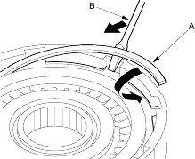
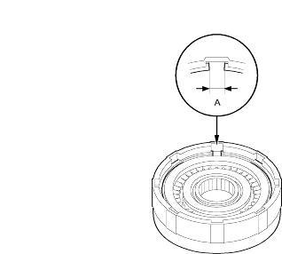
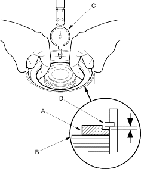

- Install the snap ring (A) with a screwdriver (B).

- Verify that the snap ring end gap (A) is 7.9 mm (0.31 in.) and above.

- Measure the clearance between the clutch end plate (A) and top disc (B) with a dial indicator (C). Zero the dial indicator with the clutch end plate lowered and lift it up to the snap ring (D). The distance that the clutch end plate moves is the clearance between the clutch end plate and top disc.
NOTE: Take measurements in at least three places and use the average as the actual clearance.
Clutch End Plate-to-Top Disc Clearance:
Service Limit: 0.6-0.8 mm (0.024-0.031 in.)
